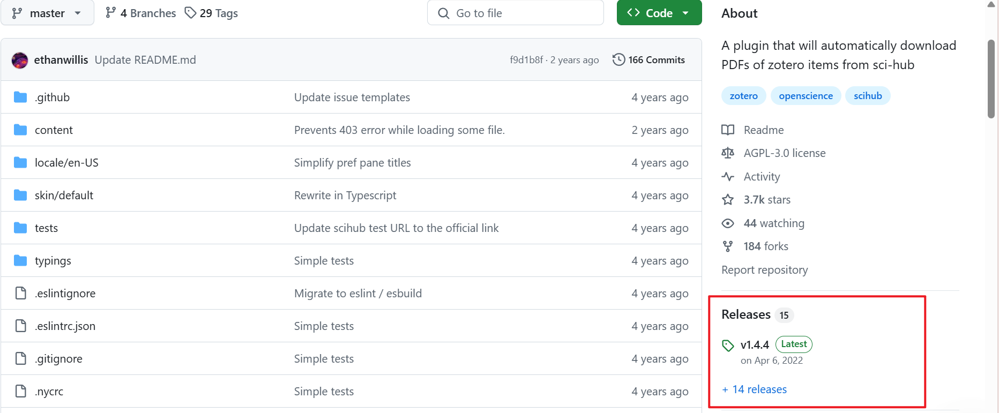
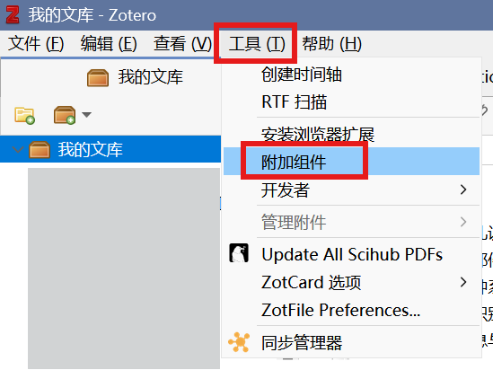
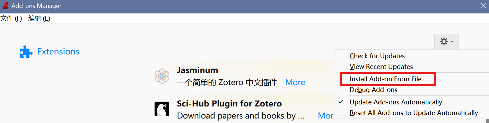
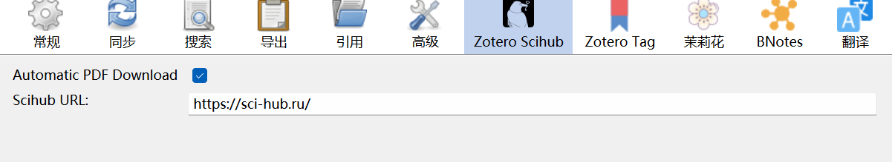
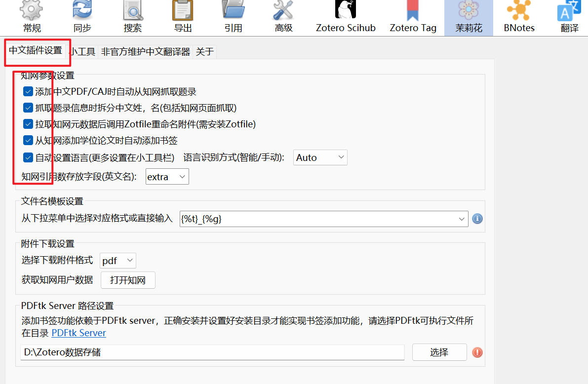
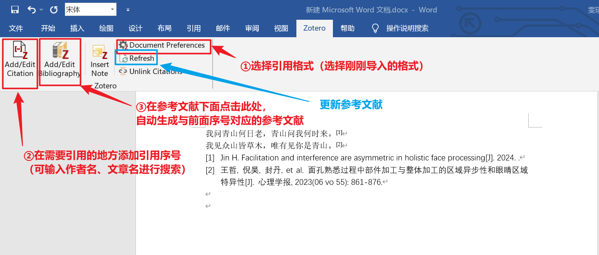

第 5 章 使用Zotero插入国标格式参考文献
汇总：肖雯瑄
更新于：2025-02-12
5.1 引用前的准备工作
5.1.1 必需插件的下载
1.Zotero Sci-hub：该插件利用Sci-Hub自动下载带有DOI条目的PDF文献，后续会自动更新，如果地址失效需要手动更新有效地址。
2.Jasminum茉莉花：该插件提供知网数据抓取、作者姓名拆分合并和中文PDF/CAJ元数据拉取等功能。
5.1.2 所需插件安装
1.将2个插件的.xpi文件下载至本地（一般是在Releases Page）

图 5.1: 插件下载
2.将下载好的插件安装至Zotero：工具-附加组件-从本地安装插件（安装好后可在编辑-首选项中查看）

图 5.2: 打开插件安装界面

图 5.3: 插件安装
3.插件设置 ① Sci-hub地址失效时需要手动更新。

图 5.4: Sci-hub插件配置
② Jasminum茉莉花的中文插件设置全选。

图 5.5: Jasminum插件配置
5.2 如何在Word中进行文献引用
在Word中进行文献引用时，要确保Zotero是打开状态，且有要引用的文献的pdf及相关的信息（如发表时间、文献作者、期刊、刊号等）

图 5.11: Word中Zotero的引用方法